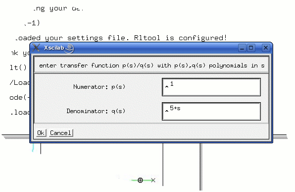

2.1 Starting RLTOOL |
Load the rltool library as per instructions in the README file. If the library loads properly the following message is displayed on Scilab prompt:
|
mode(-1); |
Type ``rlt()'' to start this programme.
2.2 Rootlocus |
On typing ``rlt()'', the you will see the following menu
Open- to open an already saved rltool session
New – to start a new rltool session
Credits – Information about developers
Help – This help manual
Cancel – Close rltool and return to the Scilab prompt
If a new session is selected, the you will be prompted to enter the transfer function as numerator / denominator in the variable 's'.

Rltool will automatically load the plant you were working with in the previous session of rltool. Click ``Ok'' to confirm this plant. You may wish to edit the plant, in that case type in the new plant and click ``Ok''. You now see two windows as shown below
Various components are maried in red. The Grey window to the right is the Control Center. Editing of the control loop can be done in the following ways
Changing plant/ controller or sensor by clicking on the respective buttons and entering the desired transfer functions
setting maximum gain of the root locus plot
The closed loop poles are highlighted by circles.
This window
is shown in Figure (2.1). The various menus in the window are:
|
||||
|
||||
|
||||
|
||||
|
||||
|
||||
|
||||
2.3 The control center |
Gain in forward path
Gain in feedback
Design mode
(Settings-->Gain
config-->Forward path) (Settings-->Gain
config-->Feedback path) (Settings-->Gain
config-->Design mode)
Immediately after starting
rltool, a user will see the control center GUI. A user can use and
configure most features using this simple GUI. Following is a brief
description of features:
|
The most convenient way to use Rltool is to set a gain using the slider. The current gain is displayed above the slider bar and also in the ``gain'' button on the control center. Also, a window containing the following closed loop plots is continuously updated:
|
Note that ``closed loop plant'' may include either ``gain in
feedback'' or ``gain in forward path''. Please see the ``Settings''
section for how to do this. A user can also set the units (hz or
rad/sec) for bode and sensitivity plots. Please see the section on
"Settings".
There is a Design mode (Settings-->Gain
Configuration-->Design mode) is most useful for control system
design
In the design mode, any changes
made with the mouse will only affect the controller. The user
can edit the plant by clicking on the Plant button, and edit the
sensor by clicking on the Sensor button. This feature makes it very
convenient to design controllers rapidly.
2.4 Frequency design |
Rltool comes with two design modes... time domain (rootlocus) and frequency domain. You can select the frequency domain mode by clicking on ``Design ®Frequency''. You will see the frequency magnitude plot of the open loop transfer function. The magnitude is shown in decibel and frequency in rad/sec. Click on the plot to determine the magnitude and frequency. The frequency domain part is still under development. It will be a great idea to take up this aspect and design it further! You can ofcourse return to the rootlocus mode by clicking on ``Design ®Root Locus''.
2.5 Editing of Plants |
These utilities are provided under the ``Plant'' tab on the main window. In the Root Locus mode, you can edit your plant at the click of a mouse. The following options are provided. The function of most of these should be obvious:
|
||||||
|
G(s)× |
1 |
|||||
|
------------ |
||||||
|
(s-z)(s-z*) |
||||||
where z* denotes the complex conjugate of z. |
||||||
|
G(s) |
||||||
|
--------- |
||||||
|
H(s) |
||||||
|
||||||
When in the design mode, the changes made using the "EDIT" menu will only affect the controller transfer function. The plant remains unchanged until you change it by clicking on the plant button. However, the loop transfer function will be modified appropriately.
2.6 Closed loop responses |
There is a great deal of flexibility in rltool to see various closed loop responses. First you will have to select one ``gain configuration'' out of the possible two. Click on ``Settings ®Gain Configuration''. You will see a selection dialogue box with two choices:
You can choose the gain to be in the
forward path as shown in the figure.
This corresponds to the
option ``K in forward path''. You can choose to put ``K in the
feedback path''. However, ``K in forward path'' is the default.
To
see closed loop responses, click on ``Response ®Closed
Loop''. You will be prompted to click on a point of the rootlocus to
select the ``operating point'' at which you want to see the closed
loop response. Once you select the operating point, you are done!
Rltool calculates the closed loop transfer function for the
configuration you have selected, i.e. the closed loop transfer
function for ``K in forward path'' is
|
|
G K |
|
------------ |
|
|
1+G K |
|
and the closed loop transfer function for ``K in feedback path'' is
|
|
G |
|
---------- |
|
|
1+GK |
|
You will see a selection menu that shows the following:
|
||
|
1 |
||
|
------------- |
||
|
1+kG(s) |
||
|
This transfer function is evaluated on the imaginary axis (by substituting s=iw) and the resulting (magnitude) plot is shown for various values of w. Options are similar to above. Click on ``cancel'' to close the response selection menu and return to the main window of rltool. |
||
2.7 Other responses |
Nyquist plot of the open loop plant G(s) can be seen by clicking on ``Response ®Nyquist''. The gain and phase margin is displayed on the plot. If you find that your plot is too coarse or cluttered, you can change the minimum and maximum frequency in ``Settings ®Nyquist-Nichols plot''. The frequency units can be changed in ``Settings ®Frequency units''.
Nichols plot for G(s) is obtained by selecting ``Response ®Nichols''. If the grid (in the main menu) is set to ``on'' you will see the logarithmic grid superimposed on the Nichols plot. Here too, you can select the desired frequency units.
The Popov plot can be used to predict the stability of the closed loop system with a sector bound nonlinearity in loop. We plot real part of G(iw) on the real axis and w Imaginary G(iw) on the imaginary axis. A simple construction then gives the range of the ``Popov sector'' and the ``multiplier''. Please see any standard text on nonlinear systems for more details on the Popov plot.
2.8 Saving and loading plants |
To save your current plant, click on
``Save ®Save''. You will be prompted
to enter the filename to which the plant should be written.
To
load an existing plant from a file, click on "Save ®Load".
You will be prompted to enter the filename.
You must have the
appropriate read/write permissions to do this operation.
2.9 Settings |
We now look at the various settings that a user can access:
|
In addition, the default configuration variables will be saved
in a file called Rltool_Config-1.6.sci. This file is machine
generated, however you can edit it if you so wish.
2.10 Help |
A short online help is provided on some topics.
|
|